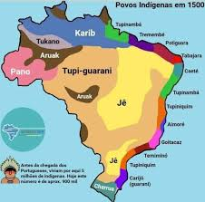

História e Influências
Conheça as origens dos povos Tupi-Guarani, suas influências na formação cultural brasileira e seus marcos de resistência.
Os povos Tupi-Guarani fazem parte de uma grande família indígena presente em diferentes regiões do Brasil e da América do Sul. Antes da chegada dos colonizadores europeus, diversos grupos já ocupavam áreas próximas ao litoral, rios, florestas e territórios de grande importância para sua organização social e cultural.
A presença Tupi-Guarani marcou profundamente a cultura brasileira. Muitas palavras do português falado no Brasil têm origem indígena, principalmente ligadas à natureza, aos alimentos, aos animais e aos nomes de lugares.
Além da língua, também existem influências na alimentação, no uso da mandioca, no conhecimento sobre plantas, na relação com os rios e florestas e em práticas culturais transmitidas por gerações.
Com a chegada dos portugueses, muitos povos indígenas sofreram violência, perda de território, escravização, catequização forçada e doenças trazidas pelos colonizadores.
Apesar das tentativas de apagamento cultural, muitos povos resistiram por meio da preservação da língua, da memória, das tradições e da luta pelo direito à terra.
Hoje, comunidades Tupi-Guarani continuam presentes em diferentes regiões do Brasil, mantendo vivas suas culturas e reivindicando reconhecimento, respeito e proteção de seus territórios.
Povos indígenas ocupavam diversos territórios no Brasil, com línguas, tradições e formas próprias de organização.
Início do contato mais intenso com os portugueses, marcado por trocas, conflitos e processos de dominação colonial.
Muitos povos sofreram catequização, deslocamentos forçados, escravização e perda de territórios.
Comunidades indígenas seguem lutando pela preservação cultural, pela demarcação de terras e pelo respeito aos seus direitos.
A presença Tupi-Guarani aparece em diferentes regiões do Brasil, especialmente em áreas do litoral, do Sul, Sudeste e Centro-Oeste.
O mapa ajuda a visualizar a diversidade de povos indígenas que contribuíram para a formação cultural brasileira.
